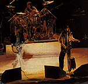
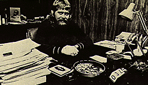
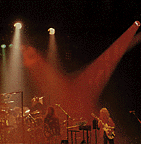
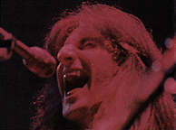

To hell with Bob Dylan
Meet Rush. They're in it for the money
By Roy Mac Gregor
Across from the dressing-room door she stands, a single red rose keeping time against her plum-blushed cheek. Lips of Iced Espresso, rippled hair, soft silk winking down to tight jeans and high-lace boots -- she stands apart from all others gathered this night for the Rush concert in Detroit's Cobo Hall. She has nothing in common with the actual crowd, mostly pimpled, totally ruffled with a solid month's anxiety that began when the Detroit police -- as familiar with the rumors of riot as with the crack of wood on skullbone -- forced the ticket offices to open early or else. There is no air of abandonment about this girl. She will not be like the one with the kung fu grip in San Diego who stormed the stage and tried to tear out the lead singer's throat. Nor will she be like the top-heavy girl in Atlanta who come up onto the stage to show the band her instruments. No: this one will wait. And see.
Behind the door opposite the girl is a table weighted down by caviar, shrimp, Courvoisier and Dom Perigion. And around the table sit the three members of Rush: Neil Peart, the cat-eyed drummer with the musketeer's mustache, Alex Lifeson, the blond guitarist with the prince valiant features, and Geddy Lee, the bass player and singer who is composed to a great extent of nose tissue and thick black hair. They neither eat nor drink. They read a history of the Russian Revolution, a philosophy primer, the autobiography of Agatha Christie. Time measures faintly in turning pages.
But the silence is broken by a girl out-flanking the security guards and pushing through the door. She is not the one with the twirling rose, much younger, but is herself in full bloom, as evidenced by some careless buttoning. She must, absolutely must, speak to Neil Peart about the song he has written on black holes in outer space. "I read all about then in Reader's Digest, Neil," she says in a cranked-up cadence. "I saved the article for you... they're so weird, I mean, aren't they? ...like there's nothing out there..."
 Nor up there, judging from Peart's total disinterest. He knows that this walking-talking blow-up doll who got lost in Reader's Digest could never comprehend, say, scientist Carl Sagan's theory on Cygnus X-1 -- the black hole of Peart's song -- that what is really out there is a binary star, two stars revolving about one another with only one being visible. The other, the black hole, exerts no light but because it does have gravity it possesses a tremendous amount of pull.
If she could understand that, then perhaps she could also understand the odd phenomenon of Rush. All that light, all that is visible in Rush comes from the three members of the group. The pull, however comes from a yellow spaniel of a man named Ray Danniels. Not so many months ago Danniels sat in his North Toronto office surrounded by depressing dry-walling, tile floors and two $14 chairs, all of which have been replaced these days with huge plants, plush carpeting, brown corduroy chesterfields and pecan paneling. Over his expensive desk is nailed a wood-carved sign of on word: RESULTS! Back then, however, hanging over his head was a minus sign in front of the $325,000 his company has sunk into Rush, a heavy third mortgage on his home and a lawsuit demanding a minimum of $1.3 million in damages. Below all that an ulcer hissed.
But these days the stomach purrs. Six gold albums in Canada and three in the United States in less than two years, sales of roughly 4.5 million record albums worldwide, perhaps the best recording contract in the business (a $250,000 advance on each new album and a remarkably high 16% royalty rate)... Today no one drives rusted-out Camaros. Counting Danniels and his business partner, Vic Wilson, Rush now travels by Rolls Royce, several Mercedes, a Jaguar, a Porsche and a Dinky display full of other play cars. And there are brand-new luxury homes to park them in front of. As for the big lawsuit -- brought against them by an American for breach of contract, (he was supposed to be a full partner, but the deal went sour) -- it has been erased efficiently by a $250,000 out of court settlement.

Danniels in his office, notable by the absence of $14 chairs; easy
on the ulcer
A single red rose costs only a half dollar and in some ways seems a
proper symbol for a far more exquisite time, a time long lost and kidded
these days by lyrics such as the ones Rush has written: "Once we loved
the flowers/Now we ask the price of land." But in the world of pop
music the rose's message persists: do with me what you will. Unfortunately
for the girl with the rippled hair, the band doesn't even see it as
they charge out of the dressing room and up onto the stage, hurrying to
deliver their own word.
The first chord from Alex Lifeson's guitar bull-dozes up through $100,000 of electrical connections and Geddy Lee's high falsetto cuts like a dentists drill through what any well be the loudest sound in rock music. He stands front stage left without his glasses, and his vision ends where the sheer nighty of smoke begins, meaning he can see into the heavy slugging and pushing of the front few rows, where the hall security guards are taking out life's small disappointments on 16-year-old heads but he cannot see the Frisbee that darts out of the dark into his shin, or the marijuana roach that sparks against his face. "You can't", he has said just before the show, "tell whether they do it because they like you or hate you." About performing he has also said: "You stand there and you shut your eyes, you lean back and whhoooooshh, there's this great roar, this wave of applause. And it grows and grows, and you feel it wash all over you, and you say "Wow! I did that!..."
And the cheering grows. Lee launches into the title song to their latest album A Farewell To Kings, the words rising out of the smoke like steam under pressure:
"When they turn the pages of history When these days have passed long ago Will they read of us with sadness for the seeds that we let grow?..."
Ah, but rock music used to be so simple concerned as it was with hand-held fantasies. Rush will have none of that; the group even has its own literary mentor, Ayn Rand, the aging American author (Atlas Shrugged) and philosopher (The Virtue Of Selfishness) who has vehemently argued for decades that capitalism is "the only system geared to the life of a rational being." Rush reads her passionately and passes her philosophy on to a massive, young audience that otherwise would never hear of her. For Rand, who was sometimes seen as the Enemy Incarnate by the campus radicals of the Sixties, it is a surprising and triumphant comeback.
The Rand philosophy came to the group through 25-year-old Neil Peart, who writes most of the band's lyrics and who read The Fountainhead when he was growing up in St.Catharines, Ontario, and decided "For me it was a confirmation of all the things I'd felt as a teen-ager. I had thought I was a socialist like everyone else seemed to -- you know, why should anyone have more than than else? -- but now I think socialism is entirely wrong by virtue of man himself. It cannot work. It is simply impossible to say all men are brothers or that all men are created equal -- they are not. Your basic responsibility is to yourself."
"For us, capitalism is a way of life," adds Lee. "It's an economic system built on those who can , do, and succeed at it. For us it is a very material way out of life. Your material things should give you pleasure."
Alex Lifeson, of the three easily the least concerned with the Rand ideas, possibly puts the group's thinking in its best context when he talks about their sudden surge of spending money. "It feels good, " he says. "It is our just reward for all the hard work."
 Ten years ago Lee and Lifeson were 14-year-olds trying to find a meaning to their lives in Willowdale, Ont., shopping plazas. Lee was, In the words of a close friend at the time, "the ugliest-looking kid I ever saw," courtesy of a merciless brushcut that only accentuated his large ears. Lifeson had his own troubles: too much weight and a 12-letter last name no one could pronounce. They were a perfect contrast to their close friend, Steve Shutt, who was then a promising young hockey player with a cash-register future and fame obviously waiting for him. Trouble was, they wanted the same things out of life.
"You could tell even then," says Shutt now the star left-winger with the Montreal Canadiens, "even before they were doing anything, that they were looking for something to pour their energies into. Then they started their band -- and nothing else mattered after that."
They began in their parents' suburban basement, with another Willowdale
friend John Rutsey, as drummer. The name "Rush" they took from a Sixties drug
term referring to the small piledriver that races up stoned spines and hammers
out hair an inch or so at a time. And they were terrible: one of their big
numbers in the early days was
Rush's first job was in The Coffin, a youth centre in the basement of the
local Anglican church, and it was here that they met Ray Danniels who was then
16, a school dropout since 15. The son of a dye-casting executive who'd worked
his way up from the bottom, Danniels possessed ambition that went even beyond
the others'. He hustled then into the competing United Church youth centre
with a better deal and from there into any high-school gym that would take
them. It was a hard sell -- Rush was already writing its own material and
refusing to cover the Rolling Stones and Beatle hits of the day -- but
Danniels, thanks to a friendly and charming manner that masks his
obsessive drive, soon had then piling into rented trucks to drive to such
places as Sudbury for a $35 concert (a far, far cry from the roughly
$100,000 they picked up far filling Maple Leaf Gardens two nights straight in
late December). And soon they, too, had quit school.
In some ways that turned out to be an essential element in their
success. Their hockey-playing friend, Steve Shutt, had already seen the
darkness at the far end of the entertainment tunnel, and they often
talked about it. "You soon realize you can't bale out because there's
nothing else you can do" says Shutt. "You've got to hang in."
"I always knew if I didn't succeed with this I didn't even have the
education to be a postman," says Ray Danniels. The key to our success is
very simple: the number of hours we put in."
At the first it was most fortunate for Danniels that he also booked the
likes of Lighthouse and Edward Bear -- and, at 22, had an income of $60,000 a
year -- for Rush couldn't be given away. "Without a doubt they were the hardest
act I had to sell," says Danniels, "sometimes nobody came to see them,
sometimes the gyms were packed. And that's what convinced me they were
the ones who could happen if anybody could."

It was a conviction he had no one to share with. The critics laughed
aloud at the group. They once went nearly four months with only three
engagements, and all on the same weekend. A girl friend was pregnant.
Alex Lifeson was, in his own words "pretty screwed up." There was little
money and no record company interest. But it was then that Danniels
and his partner Wilson took their big gamble: they booked a Toronto
studio and cut their own record, and $9,OOO later they had an album,
something to take with them while they went knocking on the doors to the
rock'n'roll dream.
"Every record company in Canada turned us down, every last one of
them," says Danniels, so he created his own label and discovered held been
right, the sullen-faced kids hanging around the gyms wanted to buy Rush.
Sales in Canada were somewhat promising, and the early response in the
States prompted the Chicago-based Mercury Records offer Rush a $100,000
recording contract and backing for a tour of America.
Danniels could
barely believe his luck. He moved quickly. The drummer, apparently ill
and not as overtly ambitious as the other two, was replaced with Neil
Peart, the son of a mechanic who had risen to own his own farm machinery
business. Peart was every bit as ambitious as Danniels, Lifeson and Lee,
and Rush soon became probably the hardest-working band in North America,
performing in excess of 200 days a year. But there was no hit record
and few kind reviews, and after the band released their third album,
Caress Of Steel, to savage reviews they came close to
packing it all in.
Lifeson hadn't been paid in five weeks, had a wife and child, and was
getting by only on the money from his wedding. Peart's car was sitting in
a garage, waiting for him to raise enough to cover the repair bill. To
make matters worse, the record company was exerting great pressure on
them to become more commercial. But they decided to stick with it, to
not give in. After all, as Danniels says: "They couldn't quit any more
than I could. What would we do -- get a job?" He was now $325,000 in the hole
with Rush and had only an ulcer to show for it.
But then suddenly, and seemingly with out explanation, the tide turned
dramatically. Their next album, 2112, came out "with acknowledgment to the
genius of Ayn Rand," as the jacket claimed.
What had happened was the times were simply catching up to Rush, rather
than being trapped in the past -- by paying mediocre and unnecessary homage
to the louder British bands of the late Sixties (Cream, Led Zeppelin), Rush
was, in fact, a whole new generation of rock music. Unlike their
British predecessors, Rush had no musical roots in the blues traditions,
and hence had little empathy for the common folk. And their ages alone meant
that they held no kindred love for the social conscience of a Bob Dylan
or Phil Ochs, for that matter not even the street justice of a Mick
Jagger. Rush was, on the average, a full decade younger than the ruling
class of modern pop music. They found themselves speaking for a large
group of young rockers without spokesmen -- a group who, despite their love
of loud, violent music, were themselves non-revolutionary, highly
conservative and certainly self-centred. It was precisely as Ray Danniels
had always known: "Rush isn't meant for people our age."
In fact, the members are a total enigma to those used to the hard-won
traditions of rock and roll. Their music may be punishing to some ears but
the members themselves are quiet-spoken, polite and considerate. Two years
ago Lee had a traditional Jewish wedding; he and his wife honeymooned in
Hawaii. Peart invests money in his father's business. Lifeson listens to
classical music, not rock in his spare time and dreams one day of performing
with the Toronto Symphony. As their own manager says about the band's
life-style, "These guys are pure boring to most music people."
Why they survived and became so successful has little to do with instantly
obvious talent and a lot to do with hard, hard work. "It's like when I phone
up an electrician and he comes and gives me good service," says Neil Peart.
"I'll call him back again and maybe recommend him to someone else." The
road show is superb in visual terms and two hours in length, and their vast
audience is ample evidence that there are many who love their music. Nobody
can ignore them anymore.
It is a satisfaction that translates into such things as the full house at
Detroit's Cobo Hall, where on this cold December night the halls still echo
with the broken fanbelt sound of Geddy Lee's voice in Rush's encore,
"Cinderella Man."
In the hotel room back from the hall Neil Peart sits along the window ledge,
a late freighter moving down St. Clair River and into his left shoulder. On
the desk beside him his briefcase sits open, a hand-printed sign asking WHO
IS JOHN GALT? in bright red lettering. Galt was Ayn Band's main character in
Atlas Shrugged and it is worth noting that at the end of the book John Galt
raised his hand over the earth and traced out the sign of the dollar.
Peart smiles, turns, and looks dawn over the hall, the river, the Windsor
waterfront, looks down on Canada where they used to laugh at him. Below, out
of sight behind the hall, a rose lies wilting in the snow.
{kind=link}
{kind=link}
{kind=link}
{kind=link}
{kind=link}